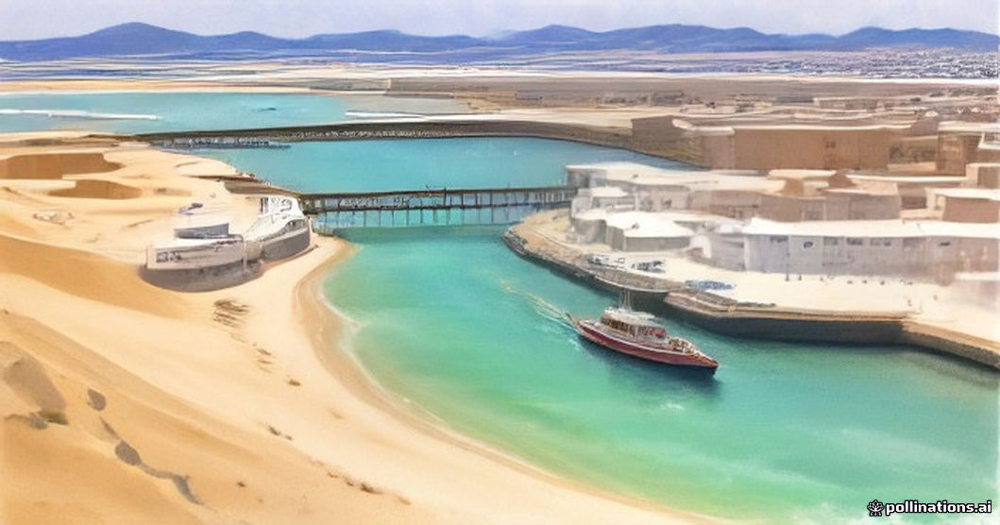

Finishing a desert tour in Fes often leaves travelers facing a major decision: head south back toward Marrakech or press onward into northern Morocco and Europe. If your itinerary leads toward Chefchaouen, Tangier, or a ferry across the Strait of Gibraltar to Spain, the logistics are straightforward once you understand local transport schedules, vehicle limits, and border routines.
While desert drivers usually drop you at your Fes riad by early evening on day three, moving north requires switching from private 4x4 transport to grand taxis, CTM buses, or ONCF trains. If you planned an open-jaw route (like those in our [/blog-marrakech-in-fes-out-flights-sahara](flight planning guide)), here is how to navigate the northern transit leg smoothly.
Fes to Chefchaouen: Buses, Taxis, and Transfers
The journey from Fes into the Rif Mountains takes roughly 3.5 to 4.5 hours depending on your chosen transit type. CTM operates several daily direct buses from the Fes CTM terminal in Ville Nouvelle. Alternatively, hiring a private transfer or standard grand taxi offers door-to-door service directly to the edge of the blue medina, where vehicle access ends.
- CTM Bus: ~4 hours, fixed departure times, requires booking 1-2 days ahead during peak season.
- Private Transfer: ~3.5 hours, flexible timing, drops off at city gates like Bab el Ain or Ras el Ma.
- Shared Grand Taxi: Lower cost, but usually requires changing vehicles at Ouezzane and offers minimal luggage space.
Chefchaouen to Tangier: Crossing the Rif to the Coast
From Chefchaouen, continuing north to Tangier takes approximately 2 to 2.5 hours by road. You will need to specify your destination in Tangier clearly to your driver: Tangier Ville (the central city, medina, and main train station) or Tangier Med (the industrial port 45 km east of the city center).
If you plan to spend a day exploring the Rif region, see our dedicated [/blog-chefchaouen-blue-city](Chefchaouen planning guide) for notes on luggage navigation inside the steep pedestrian medina.
The ONCF Al Boraq High-Speed Train Link
If your goal after northern Morocco is heading south to Casablanca or Rabat rather than Spain, Tangier Ville is the primary hub for Morocco's Al Boraq high-speed TGV train. Running at speeds up to 320 km/h, it connects Tangier Ville to Kenitra (50 minutes), Rabat Agdal (1 hour 20 minutes), and Casablanca Voyageurs (2 hours 10 minutes).
Tickets can be booked online via the official ONCF portal or directly at station counters. Securing your ticket 1 to 3 days in advance is recommended, particularly for First Class during peak summer and holiday travel periods.
Ferries to Spain: Tangier Ville vs. Tangier Med
Ferry logistics catch many travelers off guard because Tangier operates two completely separate ports separated by roughly 45 minutes of driving. Tangier Ville Port sits directly downtown beneath the Kasbah and offers fast passenger catamaran sailings to Tarifa, Spain (about 60 minutes crossing time). Tarifa sailings are ideal for foot passengers heading directly to Andalusia.
Tangier Med Port is located 45 km northeast and handles large roll-on/roll-off ferries sailing to Algeciras, Motril, and Barcelona. If traveling on foot without a vehicle, departing from Tangier Ville to Tarifa via FRS or Intershipping is usually faster, simpler, and includes a complimentary shuttle bus connecting Tarifa to the main bus hubs in Algeciras.
| Leg / Connection | Primary Transit Option | Average Duration | Key Logistics & Considerations |
|---|---|---|---|
| Fes to Chefchaouen | CTM Bus or Private Taxi | 3.5 – 4.5 Hours | Book CTM 48 hours early; winding mountain roads can trigger motion sickness. |
| Chefchaouen to Tangier | CTM Bus or Grand Taxi | 2 – 2.5 Hours | Confirm whether you need Tangier City or Tangier Med Port drop-off. |
| Tangier to Casablanca | Al Boraq High-Speed Train | 2 Hours 10 Mins | Departs from Tangier Ville station; punctual and quiet with reserved seats. |
| Tangier Ville to Tarifa | Fast Passenger Catamaran | 60 Minutes | Downtown location; customs inside terminal; susceptible to high wind delays. |
| Tangier Med to Algeciras | Car & Passenger Ferry | 1.5 – 2 Hours | 45km outside Tangier city; immigration sometimes handled onboard. |

Illustration, not a photograph — for the real thing, you'll have to stand on the ridge yourself.
Quick answers
A few follow-up questions travelers ask about this.
Can I travel from Fes to Chefchaouen on the same evening my desert tour ends?
While technically possible with a private driver, we strongly advise against it. Desert tour drop-offs in Fes usually happen between 17:00 and 19:00. Driving into the Rif Mountains at night after a 7-hour desert drive is tiring and unsafe.
Do I need to purchase ferry tickets to Spain far in advance?
During peak summer months (July–August) and major holidays, buying tickets advance online is essential. During the rest of the year, foot passengers can generally purchase tickets a day ahead or directly at the ferry port counter.
How does passport control work when taking the ferry from Tangier?
At Tangier Ville Port, Moroccan passport exit stamps and security scanning take place inside the terminal building prior to boarding. On sailings departing Tangier Med, passport processing often occurs aboard the ship at a designated desk during the crossing.
Planning your own route?
Tell us your dates and what matters to you — we'll answer with a straight recommendation, not a brochure.
Send an inquiry See the itineraries